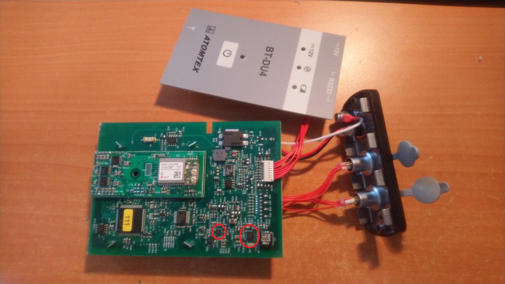
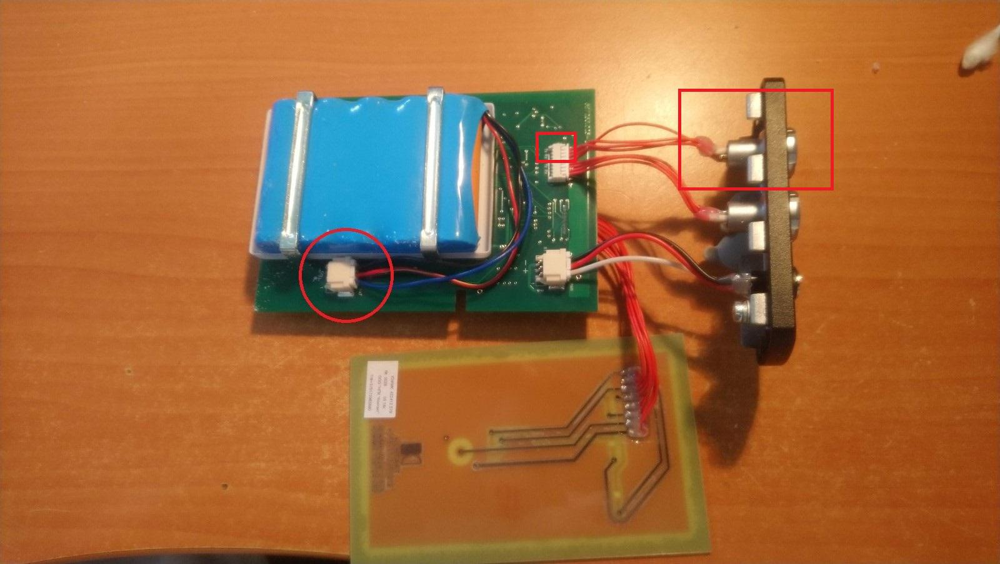
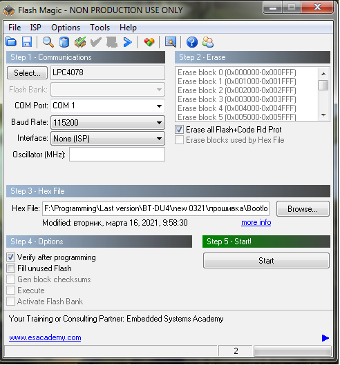
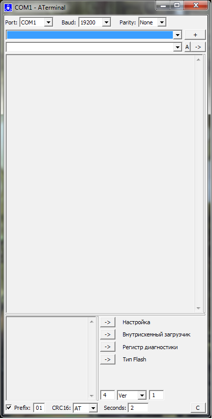
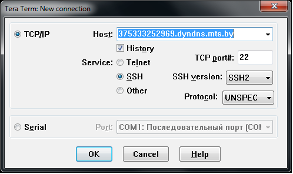
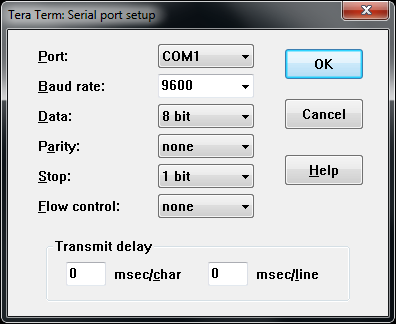
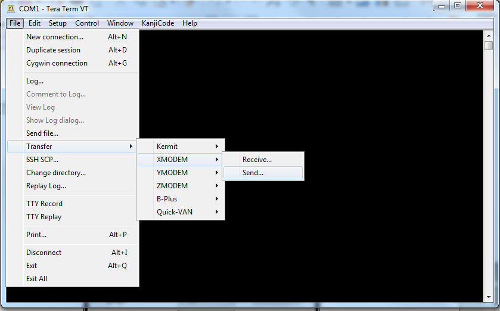

1. После получения плат с панелью и разъёмами проверить качество пайки стабилизаторов питания 3.3 В(D12)
и 5 В(D11).

Рисунок 1
2. Запрограммируйте платы: Подключите АКБ к разъёму X2, подсоедините кабель обмена от адаптера USB к
разъёму отходящему от 5-8 контактов разъёма X8.

Рисунок 2
Открыть программу FlashMagic, выставить параметры согласно картинке (Скорость, тип микроконтроллера и т.д.).
Выбрать COM порт к которому вы подсоединили прибор, и указать путь к прошивке(hex файл). Нажать на
кнопку включения прибора, затем нажать Start в программе, дождаться сообщения Finished внизу окна.

Рисунок 3
Выключите прибор длительным нажатием на клавишу включения.
3. Проведите второй этап программирования: Включите прибор, ожидайте 1 мин, затем выключите прибор
длительным нажатием клавиши включения. Снова включите прибор, откройте программу Terminal,
Выберите COM порт к которому подсоединён прибор,
установите скорость 115200 и Prefix – 50,
отправьте команду «режим настройки»:
05 00 07 FF 00,
затем отправьте команду «внутрисхемный загрузчик»:
08 00 83 00 00.

Рисунок 4
Закройте Terminal, запустите программу Teraterm (версия 4.97). Тип соединения Serial, выберите COM порт
к которому подсоединён прибор, нажмите ок.

Рисунок 5
В меню "Setup" выберите пункт "Serial port" и установите скорость (Baud rate) — 115200.

Рисунок 6

Рисунок 7
Перейдите в меню File/Transfer/XMODEM/Send, укажите путь к прошивке (App.bin), по окончании прошивки
выключите прибор и проведите процедуру описанную в начале пункта 3. Затем выключите прибор.
4. Отсоедините АКБ и проведите доработку по заряду прибора: запаять конденсатор 1 мкФ (0805) между
фильтрами Z20 и Z21 со стороны АКБ. Подсоедините АКБ.
Рисунок 8
5. Запись номера прибора: Включите прибор, подсоедините к ПК через адаптер. Откройте программу Terminal
(настройки в п.3), отправьте команду «режим настройки»:
05 00 07 FF 00
, затем необходимо отправить команду «писать ID код»:
13 08 FF 24 00 04 00 00 00 00
, номер прибора зашифрован в 7 и 8 бите команды в шестнадцатеричной системе исчисления, 9 и 10 бит это
месяц и год (для окончательного внесения инд. данных). К примеру если номер прибора 120 то команда выглядит так:
13 08 FF 24 00 04 00 78 00 00
.
6. Проверить работу схемы заряда прибора — подключить прибор к зарядному устройству на 12 В, убедиться
что индикатор «12V» горит красным, а индикатор батарей горит жёлтым.
7. Записать скорость обмена 19200. В программе Terminal необходимо отправить команду «режим настройки»:
05 00 07 FF 00
, затем «Писать скорость(19200)»:
13 05 FF 02 00 01 06
. После перезапуска прибора обмен будет на скорости 19200, это необходимо для работы с датчиками.
8. Проверить работу Bluetooth – при помощи устройства с Bluetooth обнаружить прибор и убедиться в
правильном отображении его номера и типа прибора. Процедуру производить с отключённым кабелем обмена к ПК.
9. Провести калибровку заряда — Зарядите прибор до максимума (жёлтый индикатор батареи гаснет), затем
включите прибор при подключённом БД, дождитесь полного разряда прибора и зарядите его снова до
максимума. Убедитесь что при подключении к КПК отображается 100% заряда.